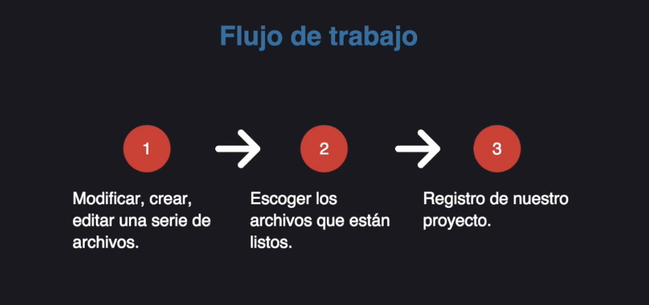

Que es Git?
Es un Sistema de control de versiones. Nos registra los cambios realizados en un archivo o en un conjunto de ellos. Git nos permite monitorear todo lo que hacemos en nuestro proyecto, ya sea que agreguemos o cambiemos líneas de código.
Ejemplo:
Al contar con un grupo de archivos funcionales, en automático se convertirían en nuestra versión 1 de nuestro proyecto. Conforme pasa el tiempo y los archivos vayan siendo modificados o se creen nuevos que complementen a nuestro proyecto, este cambiara a una nueva versión sucesivamente hasta contar con diferentes versiones de nuestro proyecto.
Ventajas de Git
Una de las ventajas de utilizar Git es poder desplazarnos entre versiones para detección de errores si estos se encuentran en la última versión y verificar en que versión no se presentan dichos errores para así poder realizar los debug correspondientes.
Otra ventaja es contar con una mejor organización de nuestros proyectos ya que podemos crear commits, evitando que se generen muchas carpetas del mismo proyecto y que posteriormente será difícil de gestionar e identificar. Los commits se mencionaran más adelante.
Los tres estados de Git
- Working directory: Aquí es donde editamos y trabajamos con nuestros proyectos.
- Staging área: Aquí es donde escogemos que archivos están listos para pasar al tercer estado, al igual que decidimos que archivos no están listos por el momento.
- Repository: Aquí es el registro de todo nuestro proyecto (Commit).

Ramas de Git
Una de las funciones más importantes al momento de trabajar con Git es la posibilidad de crear versiones “alternas” de nuestros proyectos a partir de un commit específico. A estas versiones alternas se les conoce como ramas y se pueden crear tantas como se requieran en el proyecto, permitiendo así interactuar con diferentes códigos y cambios dentro de nuestro mismo proyecto sin afectar la rama principal.

Resumen
Al trabajar con ramas nos facilita mucho el manejo del código de nuestro proyecto para realizar modificaciones experimentales y manejo de errores en diferentes situaciones que el propietario pueda definir. Una rama al ser una línea alternativa de tiempo, no tocara el código fuente original y se puede alterar cuantas veces sean requerido y se pueden generar diferentes commits en ella. Si deseamos migrar los cambios realizados en una rama hacia nuestra rama master, podemos crear una fusión.